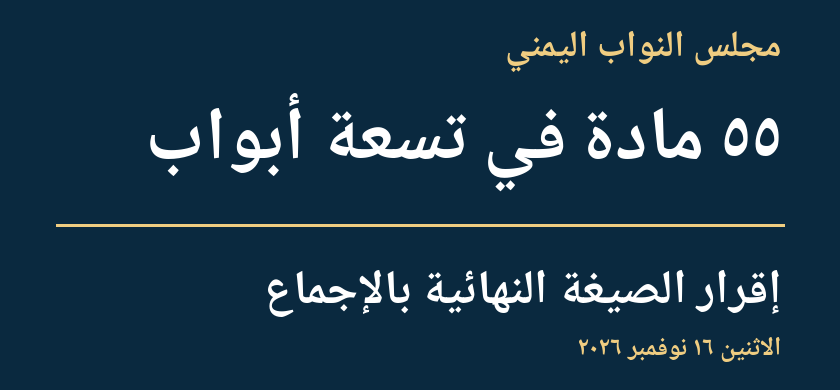

مجلس النواب يقرّ بالإجماع قانون تصنيف الحوثيين منظمة إرهابية وتجريم أنشطتهم وتمويلهم
صوّت مجلس النواب بالإجماع يوم الاثنين 16 نوفمبر على الصيغة النهائية لقانون تصنيف جماعة الحوثي منظمة إرهابية وتجريم أنشطتها وتمويلها. وذكرت سبأ أن المجلس أقرّ النص لرفعه إلى رئيس مجلس القيادة الرئاسي لإصداره، بعد مناقشة المواد وتقرير اللجنة البرلمانية على مدى يومين.
ما الذي أقرّه النواب؟
تضم الصيغة التي أقرّها المجلس 55 مادة في تسعة أبواب. ووفق عرض وكالة سبأ، يشمل التصنيف تنظيمات الجماعة وتشكيلاتها السياسية والعسكرية والمدنية. ويحدّد النص الجرائم والعقوبات والتدابير المتعلقة بتمويل الجماعة وتسليحها وملاحقة المتورطين في الانتهاكات وحماية حقوق المواطنين وممتلكاتهم.
كيف وصل المشروع إلى التصويت؟
وافق مجلس الوزراء على المشروع في 11 أكتوبر. ثم درست لجنة برلمانية خاصة برئاسة محسن باصرة مواده بحضور ممثلين عن الحكومة. وناقشها النواب على مدى يومين قبل تصويت الاثنين. والخطوة التالية التي أعلنتها سبأ هي رفع النص إلى رئيس مجلس القيادة الرئاسي لإصداره.
من أرشيف سهيل • موافقة مجلس الوزراء في 11 أكتوبر ما وراء الخبر • أبو الأنوف الفقيه
ما وراء الخبر • أبو الأنوف الفقيه